Дружелюбный гайд: неттоп + VPS + первый бэкап · v1.0.0
Полный справочник: manual.html · PAGE.md · Releases
Обслуживаю сайты и сервера небольших компаний — SaaS и интернет-магазины. Нужны бэкапы БД и файлов. Слепок всего диска — слишком тяжёлый; обычно хватает дампа MySQL и архива каталога магазина.
Можно поставить backup-client на VPS, но надёжнее держать архивы у себя на отдельной машине, а не «где-то в облаке».
device_id на backup-PC*.aesHP ProDesk 260 G2 (б/у, ~$50–75): i3-6100, 16 GB RAM, SSD 256 GB, бесшумный, ~35 W.
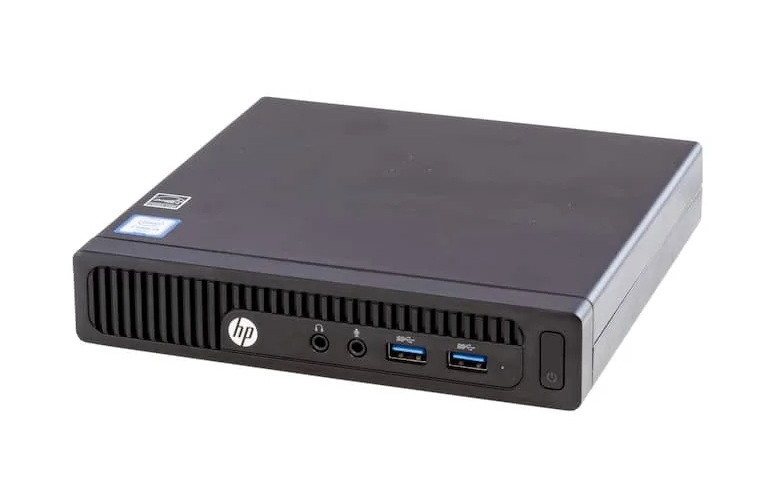
backup-client-1.0.0-windows-x64.zipbackup-server-1.0.0-linux-x64-musl.tar.gzbackup-decrypt-1.0.0-windows-x64.zipРаспаковка на диске C:\backup\:
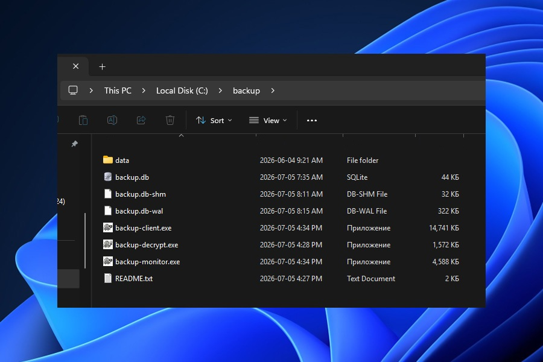
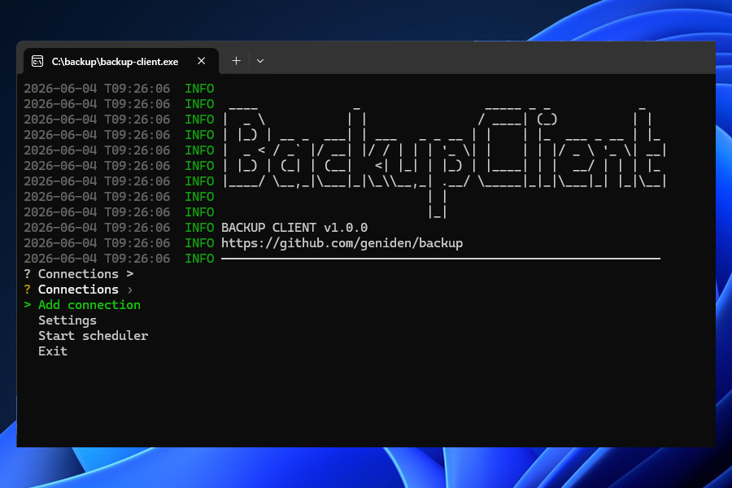
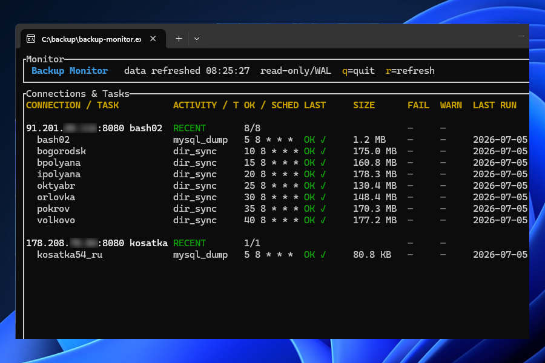
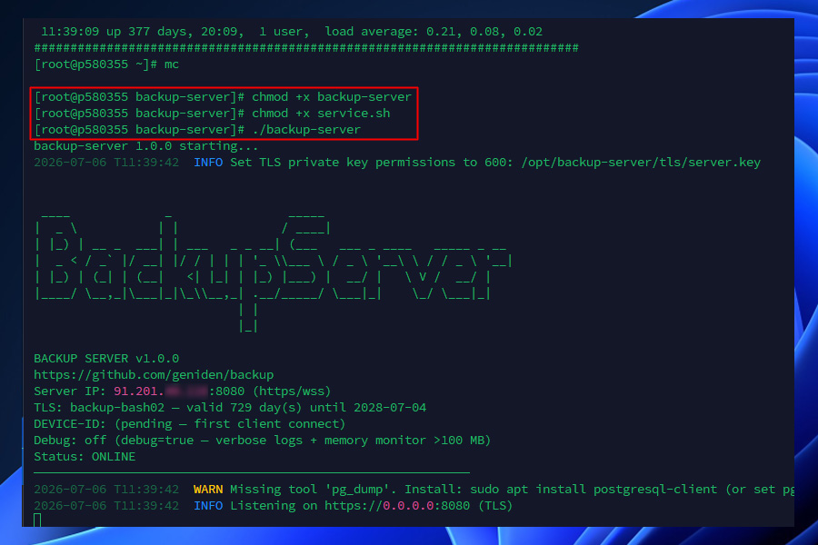
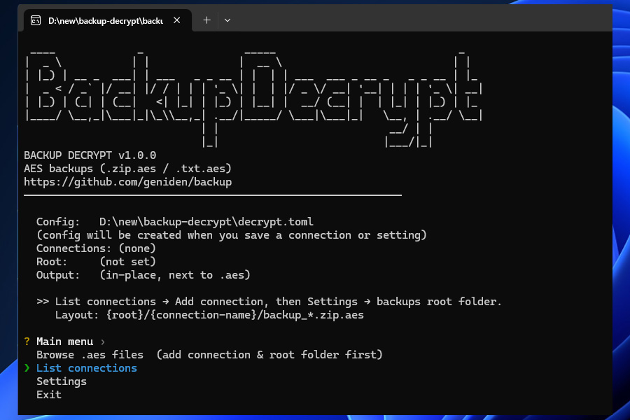
Запусти C:\backup\client\backup-client.exe
Настройки → Язык — English, Deutsch, Français, Русский, 中文.
Подключения → Добавить подключение
На «Проверить подключение сейчас?» — n (сервер ещё не поднят).
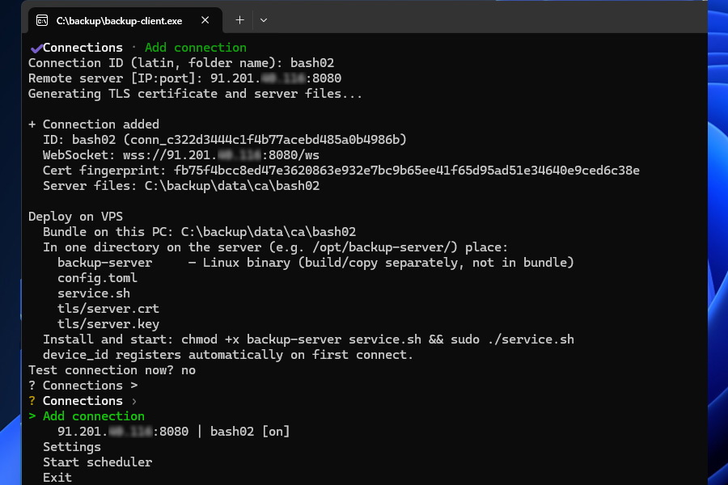
Клиент создаёт пакет для сервера:
C:\backup\client\data\ca\bash02\ ├── config.toml ├── tls\ (server.crt, server.key) ├── service.sh └── README.txt
ca\bash02\ — всё для VPS в одном месте.
Exec format error).
Надёжно: WinSCP (Binary), FAR + SFTP, scp из PowerShell.
После копирования: file backup-server → ELF 64-bit … statically linked.
mkdir -p /opt/backup
# PowerShell (OpenSSH) scp -r C:\backup\client\data\ca\bash02\* user@203.0.113.10:/opt/backup/ scp C:\backup\server\backup-server user@203.0.113.10:/opt/backup/
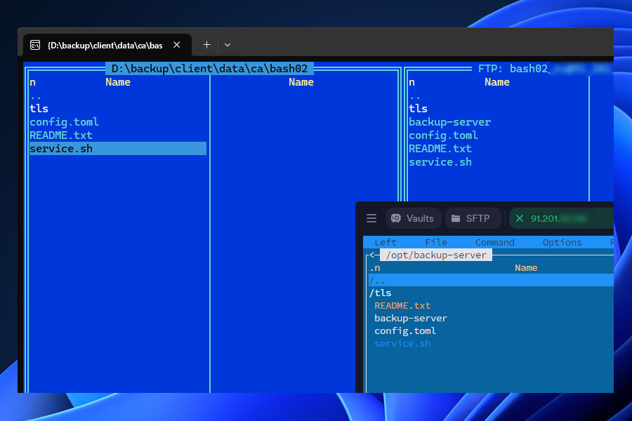
cd /opt/backup chmod +x backup-server service.sh ./backup-server
chmod 600 tls/server.key — обычно не нужен: backup-server и service.sh выставят сами. Если сервер ругается на ключ — сделай вручную.
sudo ./service.sh sudo systemctl status backup-server
| Команда | Действие |
|---|---|
sudo systemctl start backup-server | Запустить |
sudo systemctl stop backup-server | Остановить |
sudo systemctl restart backup-server | После правки config.toml |
sudo systemctl enable backup-server | Автозапуск при загрузке Linux |
sudo journalctl -u backup-server -f | Логи в реальном времени |
free -h # память df -h # диск uptime # нагрузка
Подключения → bash02 → Проверить подключение
При первом успехе сервер сохраняет device_id этого ПК в config.toml.
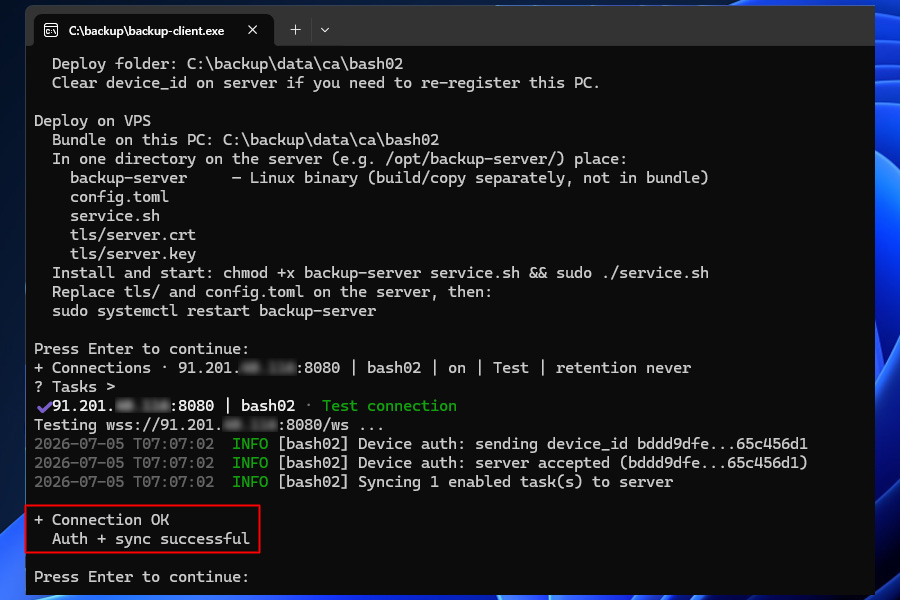
Сменить backup-PC: на VPS device_id = "" → systemctl restart backup-server → проверка с нового ПК.
# Ограничить порт только IP клиента (пример UFW) sudo ufw allow from ТВОЙ_IP to any port 8080 proto tcp
Подключения → bash02 → Добавить задачу
Настройка задач — ядро системы: тип, параметры и расписание определяют, что и когда копируется с VPS. Остальные пункты меню (планировщик, шифрование) работают поверх уже созданных задач.
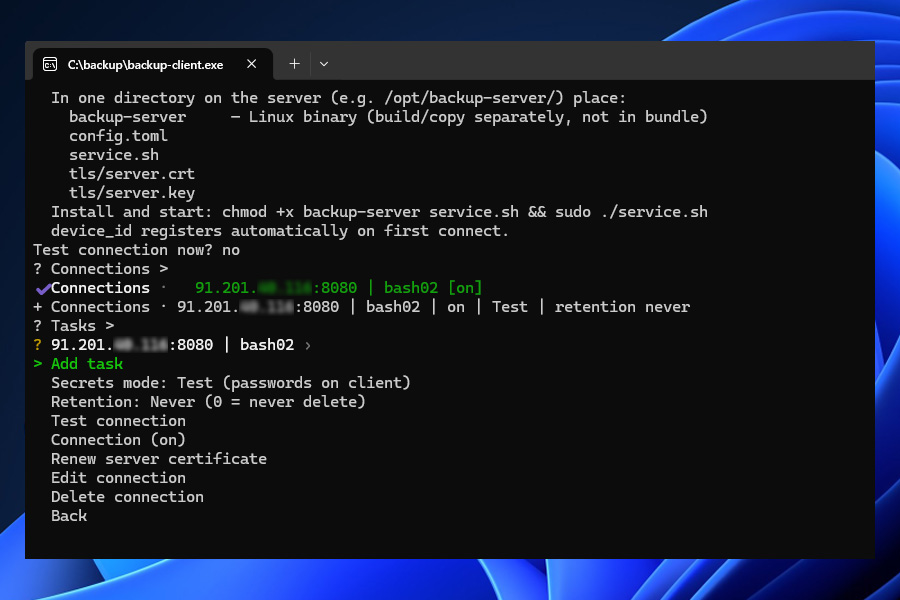
| Тип | Когда |
|---|---|
| mysql_dump | MySQL / MariaDB |
| postgresql_dump | PostgreSQL |
| files_archive | Папка сайта, конфиги |
| sqlite_dump | Файл SQLite |
| shell | Свой .sh в data/scripts/ |
| dir_sync | Инкремент (без AES) |
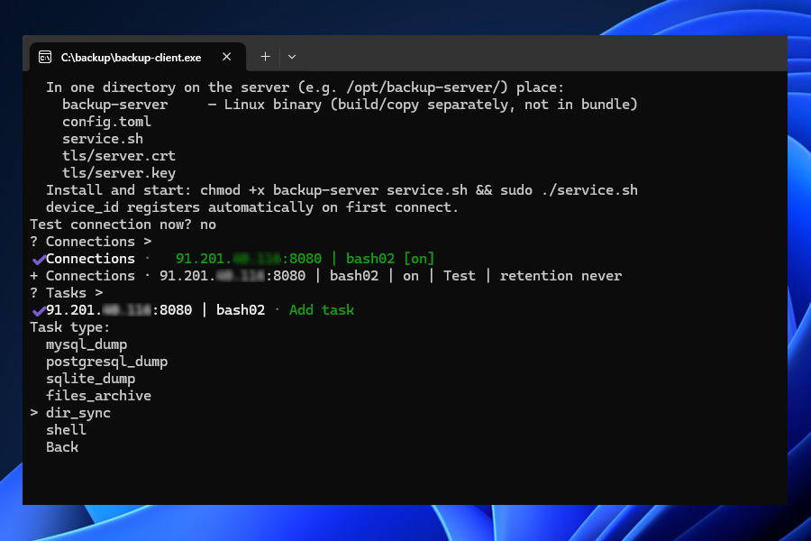
При вводе клиент показывает подсказку по полям. После сохранения вы увидите полное выражение, например
→ сохранено как: 0 8 * * *.
Формат — 5 полей: минута · час · день месяца · месяц · день недели.
Звёздочки * («каждый») можно не вводить — недостающие поля дополняются автоматически.
Запись /N понимается как */N (каждые N единиц в этом поле).
| Что ввести | Сохранится как | Когда запуск |
|---|---|---|
*/5 | */5 * * * * | каждые 5 минут (для теста) |
0 8 | 0 8 * * * | ежедневно в 08:00 |
0 2 | 0 2 * * * | ежедневно в 02:00 |
0 /2 | 0 */2 * * * | каждые 2 часа (в :00) |
*/60 или /60 | 0 * * * * | каждый час |
*/120 | 0 */2 * * * | каждые 2 часа |
*/30 * * * * | — | каждые 30 минут |
0 0 * * 0 | — | каждое воскресенье в полночь |
Если много задач (5–10 и больше) стартуют в одну и ту же минуту, сервер может не успеть принять всё в очередь — часть запусков будет пропущена (в логе: «ПРОПУЩЕНА в этот запуск»).
Разносите задачи хотя бы по минутам: первая в минуту 0,
вторая в 1, третья в 2… Или с шагом 5: 0, 5, 10
в том же часу.
Пример для трёх дампов БД утром: 0 8 * * *,
1 8 * * *, 2 8 * * *.
Только типы files_archive и dir_sync работают с файлами на сервере напрямую — в параметрах задачи нужен абсолютный путь к каталогу. Остальные типы (дампы БД, sqlite, shell) используют свои поля (хост БД, скрипт и т.д.).
Чтобы узнать путь на VPS для нужной папки, зайдите по SSH и выполните:
cd /var/www/site && pwd
Вывод (например /var/www/site) — подставьте в параметр пути при создании задачи.
Задача → Запустить сейчас (ручной тест)
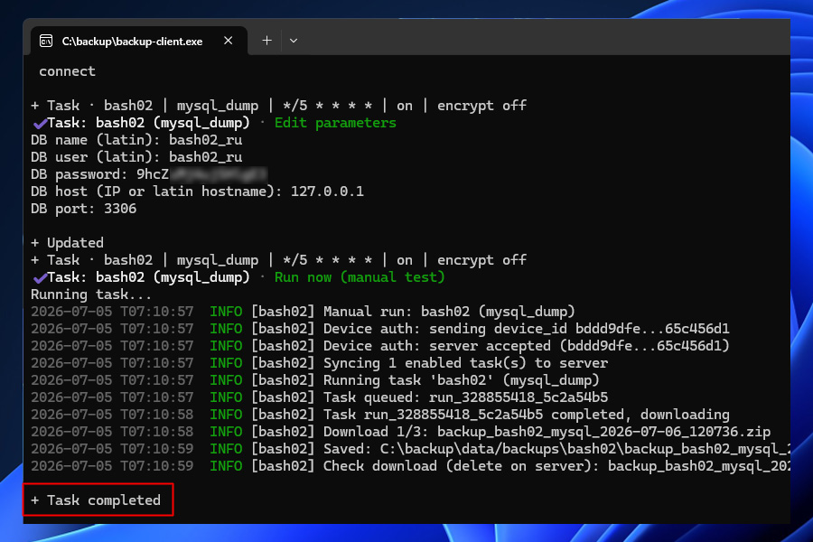
C:\backup\client\data\backups\bash02\ backup_....zip
Запустить планировщик или backup-client.exe serve
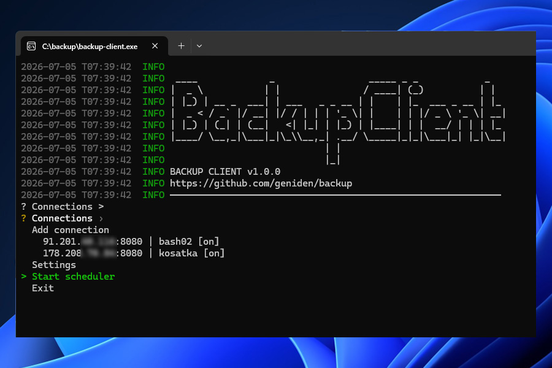
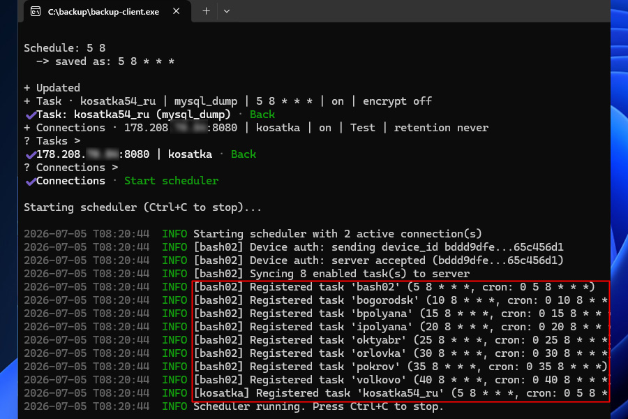
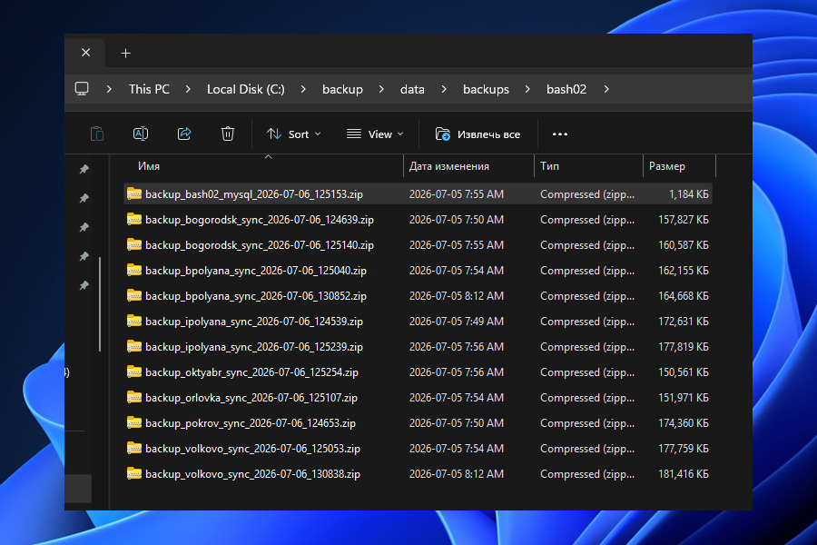
Win+R → taskschd.msc → Создать задачу:
C:\backup\client\backup-client.exeserveC:\backup\clientПроще (только после логина): shell:startup → ярлык с serve.
Get-Content C:\backup\client\data\backup.log -Wait -Tail 30
Когда всё работает: в меню подключения переключи Режим секретов: Продакшн, затем Проверить подключение.
Пароли dump-задач уходят с клиента, остаются на сервере.
У каждого подключения (каждого VPS) может быть свой encrypt_password в
config.toml на сервере. Клиент только включает Шифрование (Вкл.) на задаче —
сам пароль на backup-PC не хранится.
Пароль знают только backup-server (шифрует архив перед отправкой) и тот, кто его задал. Можно придумать свой passphrase или сгенерировать случайный в backup-decrypt и скопировать то же значение на сервер.
backup-decrypt.exe (меню на английском) → List connections → Add connection → имя bash02 (как slug) → программа покажет пароль.
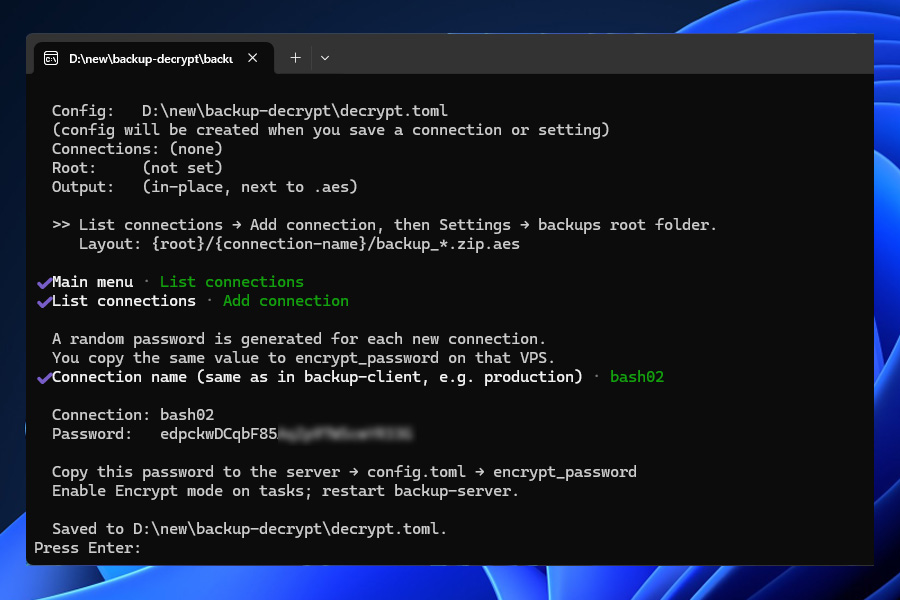
На VPS в /opt/backup/config.toml:
encrypt_password = "тот_же_пароль"
Перезапуск: sudo systemctl restart backup-server
В backup-client: Задачи → … → Шифрование (Вкл.) — на диске будут *.zip.aes, не открытый zip.
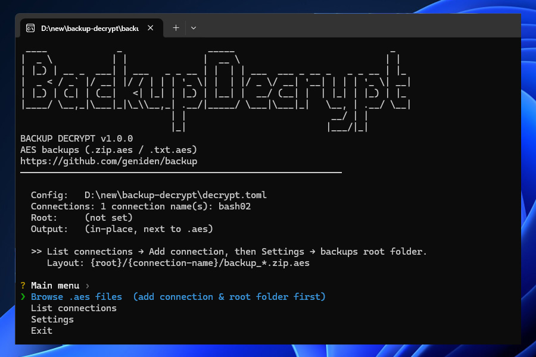
data\backups\bash02\backup-monitor.exe — статус задач| Проблема | Решение |
|---|---|
| FileZilla / битый бинарник | WinSCP Binary, FAR, scp; file backup-server |
| device_id / другой ПК | device_id = "" на сервере, restart |
| mysqldump not found | which mysqldump → config.toml на сервере |
| Encrypt skip | Пустой encrypt_password на сервере |
| Нет файла на клиенте | Запущен ли serve / Task Scheduler? |